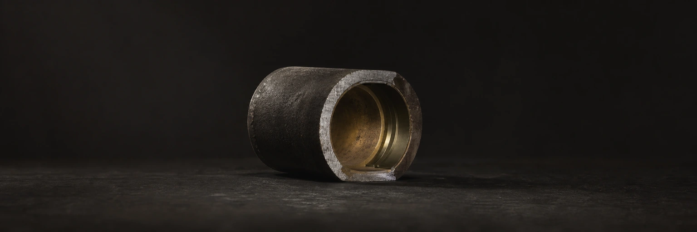

BioFlux Observer
Промышленный телеметрический дашборд для биогаз-станции: живой поток, пороги-алармы и отчётность для инвесторов.

Контекст
Что это
Прототип телеметрического дашборда для мониторинга биогаз-станции: показатели потока в реальном времени, пороги-алармы и отчётность.
Какую проблему решает
Промышленной станции нужен живой контроль потока, тревог и отчётности для инвесторов — вместо ручных таблиц и запоздалых сводок.
Система
Технический стек
Архитектура
Слой данных нормализует телеметрию, дашборд рендерит метрики и тренды на Recharts, пороговая логика поднимает тревоги, а репорт-слой собирает сводки для инвесторов.
Почему именно так
Промышленный мониторинг требует читаемости под нагрузкой: чёткие пороги, тренды и алармы важнее декоративных графиков — поэтому фокус на данных и понятной подаче.
Карта системы
Доказательства
Сильные стороны
Промышленный контекст, телеметрия в реальном времени, пороговые тревоги и инвестор-ориентированная отчётность в чистом типизированном фронтенде.
Что это доказывает
Умение превращать сырую телеметрию в понятный операционный и инвесторский дашборд: данные, пороги, тренды и отчёты.
Как обеспечивалось качество
Строгая типизация (TypeScript) и отделение пороговой логики от рендера: тревоги проверяемы отдельно от графики, чтобы срабатывание было детерминированным, а не «на глаз».
Границы
Статус — прототип, а не промышленная система: работа проверялась на тестовых и смоделированных данных, а не на сертифицированном контуре объекта. Продукт не заменяет промышленную систему безопасности и не имеет SLA. Долговременное хранение истории, отказоустойчивость и интеграция со SCADA — следующий этап, а не сделанное.
Нужен похожий продукт?
Соберу под ключ — от архитектуры до деплоя и QA. Отвечу с оценкой за 24 часа.